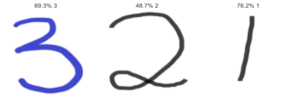

import numpy as np
from sklearn.ensemble import RandomForestClassifier
import matplotlib.pyplot as plt
import seaborn as sns; sns.set()
import matplotlib
# import the necessary packages
from sklearn.model_selection import train_test_split
import os
import tkinter
from os import listdir
from PIL import ImageHand Written Recognition with Random Forest
This notebook can be downloaded here.
This notebook demonstrate how to use random forest to do hand written recognition.
Instruction
Make the following three folders. The notebook should be in the same path as these three folders
train images: Containing few subfolders. Each subfolder contains images of a class. In this example, data has two subfolders:1(containing number 1 images) and2(containing number 2 images). If your categories are lettersa,bandc, you need to name the foldersa(containg letteraimages),b(containg letteraimages), andc(containg letteraimages) and so on.test images: Containing only images for testing. There is NO subfolder withintest imagesThe notebook should be in the same folder as these two above folders.
Import some packages
# Set image resolution
dim = 100
# Set the forest
number_of_trees = 1000train_folder = 'train images'
test_folder = 'test images'
lab = os.listdir(train_folder)Xtrain = np.empty((0,3*dim*dim), float)
ytrain = np.empty((0,), int)
for i in range(0, len(lab)):
path = train_folder + '/' + lab[i]
names = [f for f in os.listdir(path)]
for n in names[0:]:
img = Image.open(path +'/'+ n)
image = img.convert('RGB')
image = image.resize((dim, dim))
image = np.array(image)
image = image.ravel().reshape(1,-1)
Xtrain = np.append(Xtrain, image,0)
ytrain = np.append(ytrain, i) Training a Random Forest
from sklearn.ensemble import RandomForestClassifier
model = RandomForestClassifier(n_estimators=number_of_trees)
model.fit(Xtrain, ytrain)RandomForestClassifier(n_estimators=1000)Accuracy on Training Data
ypred=model.predict(Xtrain)
from sklearn.metrics import confusion_matrix
mat = confusion_matrix(ypred, ytrain)
matarray([[21, 0, 0],
[ 0, 29, 0],
[ 0, 0, 23]], dtype=int64)Predicting New Images
In the next codes, we will use our fitted model to classify new images of dogs and cats. The model will label as Dog or Cat. These labeled images is then save in the predict folder.
onlyfiles = [f for f in listdir(test_folder)]
import matplotlib.pyplot as plt
plt.figure(figsize=(10, 10))
for i, images in enumerate(onlyfiles):
ax = plt.subplot(int(1+len(onlyfiles)/3), 3, i + 1)
img = Image.open(test_folder+'/'+images)
image = img.convert('RGB')
image = image.resize((dim, dim))
image_print = image.resize((dim, dim))
image = np.array(image)
image = image.ravel().reshape(1,-1)
predictions = model.predict(image)
confidence = (100*model.predict_proba(image).max()).round(1)
plt.imshow(image_print)
plt.title(str(confidence)+'% '+lab[predictions[0]])
plt.axis("off")